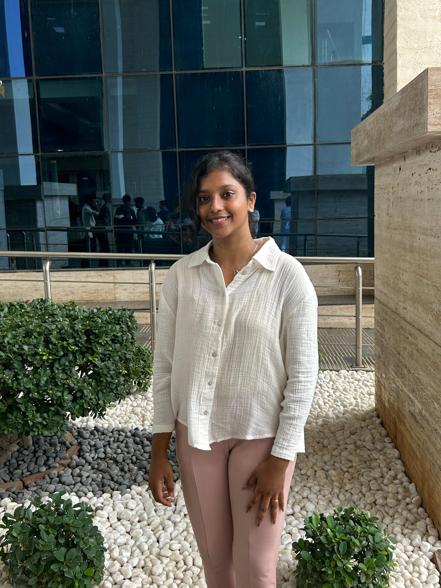

Building AI systems that solve practical problems —
document intelligence, explainable ML,
and whatever comes next.
I'm a final-year Computer Science student at VIT Chennai, building AI systems that solve practical problems — not just models that perform well on paper. I'm particularly interested in document intelligence, explainable machine learning, and the challenge of turning messy, real-world data into structured, reliable systems.
What excites me most isn't just training a model — it's understanding the entire system around it. I enjoy asking why something works, how people will actually use it, where it might fail, and what makes it reliable enough to trust in the real world. That curiosity has naturally pulled me toward the intersection of AI and product thinking.
I'm always looking for opportunities to work with thoughtful teams, learn from experienced engineers, and contribute to AI products that create meaningful impact.
Tap any tile to expand · dark tiles are the lead projects
Rank TB notifications by recorded diabetes on 684K real-registry records — the GNN didn't beat a plain MLP, and the hub structure of the graph is consistent with why.
The World Health Organization recommends screening every TB patient for diabetes, but testing capacity is scarce. We built a screening model that ranks TB notifications by recorded diabetes and treatment-era mortality risk using only what the clinic holds on day one of notification — no later-workup fields, no leakage.
Starting from Brazil's SINAN-TB national registry (964,099 records), a field-by-field leakage audit under a single prediction-time rule removed 15 fields recorded during or after treatment (8 treatment-era, 7 downstream), 1,849 post-death notifications, and the 2001–2006 era (30× death under-recording). Analysis cohort: 684,694 notifications, 88 notification-time features. We compared a heterogeneous GNN against XGBoost, logistic regression and MLP on identical inputs and group-aware splits.
Honest negative result: XGBoost reached lock-box AUROC 0.804 (death) / 0.808 (recorded diabetes); the heterogeneous GNN did not beat a plain MLP after equal-budget tuning (0.8156 vs 0.8154 on death; 0.8105 vs 0.8107 on recorded diabetes), consistent with the graph's 101-hub structure sending nearly identical messages across patients. Reported as a finding, not a failure. Isotonic recalibration (fitted on validation) dropped expected calibration error from 0.303 to 0.001, and a WHO-grounded guideline layer attaches verbatim passages to each flagged score (retrieval-grounded explanation without text generation — a deliberate clinical-safety choice). Indian hospital-data retraining planned for the 8th-semester capstone.
Tokenizer surgery + LoRA + grammar-constrained decoding on Qwen2-VL-7B — +48.5pp over Florence-2 on Indian commercial invoices.
Indian commercial invoices are extraction-hard for two reasons at once: a long-tail schema of 174 fields where fewer than 7% are filled per invoice, and natural visual noise that generic vision-language models were never trained for. Off-the-shelf VLMs hallucinate values or produce unparseable output.
RECIQ tackles both problems on Qwen2-VL-7B-Instruct through three core ideas: tokenizer surgery that injects all 174 schema field names as atomic vocabulary tokens, LoRA fine-tuning that concentrates gradient signals on schema-relevant positions, and a grammar-constrained beam decoder that guarantees syntactically valid JSON at every generation step. A downstream GraphSAGE anomaly detector built on RECIQ's structured output reaches 68.1% macro F1 for financial auditing.
Explainable NIDS that transferred catastrophically (AUC 0.264) until SHAP traced a sign-inverted feature — then a 0.979 / 0.971 AUC pooled model with an honest adversarial audit.
Pre-trained enterprise intrusion detectors collapse when applied to IoT traffic — ours fell to AUC 0.264 (below chance), and SHAP traced it to a sign-inverted feature relationship confirmed by a second explainability method. Rather than patch the symptom, we pooled both enterprise and IoT datasets (600K+ rows) into a single XGBoost model reaching 0.979 / 0.971 AUC, outperforming two domain-adaptation baselines head-to-head.
An adversarial-robustness audit revealed the model's true vulnerability was 83–100% (not near-zero as initial estimates suggested); a SHAP-based drift monitor still flags evaded traffic with a 145× margin. Benchmarked end-to-end on a resource-constrained edge proxy with a bounded 4.1× latency increase (4.3 ms → 17.5 ms).
RAG assistant with hybrid BM25+dense retrieval, cross-encoder reranker, and an LLM-judge evaluation harness that lifted answer quality 61→87%.
A RAG study assistant over an openly-licensed OpenStax textbook corpus. Hybrid BM25 + dense retrieval fused via Reciprocal Rank Fusion with a cross-encoder reranker (95% top-5 passage recall on a 39-question evaluation set). An LLM-judge evaluation harness (gpt-oss-120b answerer via Groq, qwen3.8-27b judge) measures faithfulness, correctness, citation and off-syllabus refusal — every prompt and threshold choice was iterated against the harness rather than by inspection.
Django platform matching patients to providers by symptoms, location, and specialisation.
Healthcare platform matching patients to providers based on symptoms, location, and specialisation. Secure authentication, appointment scheduling, and provider recommendation logic built on Django.
Vision-language models with tokenizer surgery, LoRA fine-tuning and grammar-constrained beam search for schema-aligned JSON extraction from Indian commercial invoices. 83.04% Active Exact Match and 99.0% parse rate on held-out synthetic invoices, outperforming the strongest fine-tuned baseline (Florence-2-base) by +48.5 percentage points.
Explainable network intrusion detection pooling enterprise and IoT datasets into one XGBoost model (0.979 / 0.971 AUC) after SHAP-traced cross-domain failure analysis, with an adversarial-robustness audit (true vulnerability 83–100%) and an edge-deployed pipeline that stays within memory limits.
A washable smart-textile vest for COPD management using closed-loop haptic intervention and prior-informed ensemble anomaly detection (OC-SVM + Isolation Forest + GMM). Published in NCSFI 2026 Proceedings, ISBN 978-93-95105-17-0, PSG College of Technology, July 2026.
A non-contact self-administered IOP measurement device that combines amplitude-modulated acoustic radiation-force excitation, multi-beam phase-sensitive interferometry with a common-mode reference beam, cardiac-phase timing, and model-based joint inversion of IOP and corneal stiffness — with a reliability check that withholds unstable readings and a per-patient stiffness memory that improves precision over repeated home use.
An explainable volatility forecasting system for Indian equities, fusing classical statistics (GARCH family) and deep learning with SHAP-based regime-conditional analysis. Phase 1 complete: GARCH's residual (not its forecast) becomes significantly more important during crisis periods (p<0.0001, FDR-corrected) — the pooled average looks null because crisis days are only ~6% of the test set. Phase 2 in progress: incorporating structured earnings-call transcript features as a third signal stream, and exploring cross-stock volatility spillover with attention-based GNNs. Statistical validation (permutation testing, FDR correction, Diebold–Mariano tests) throughout.
IBM Career Education Program (CEGENAI1IN), powered by IBM Developer Skills Network. July 2026.
Merchandise Committee, International Technical Fest of VIT Chennai. Oct 31 – Nov 2, 2025.
Presented CalmWeave at the National Conference on Synergy in Fashion Industry, PSG College of Technology, Coimbatore. July 2026.
Team KalariCoders, selected among the top 10 out of 1500+ teams in a 24-hour hackathon at Mar Baselios Christian College of Engineering and Technology, Kerala. April 20–21, 2024.
Blockchain-focused hackathon. VIT-AP University, April 2024.
Open to research internships, collaborations, and conversations about ML systems, document intelligence, AI governance, or anything thoughtfully ambitious.
Kruthikhavishali@gmail.com ↗